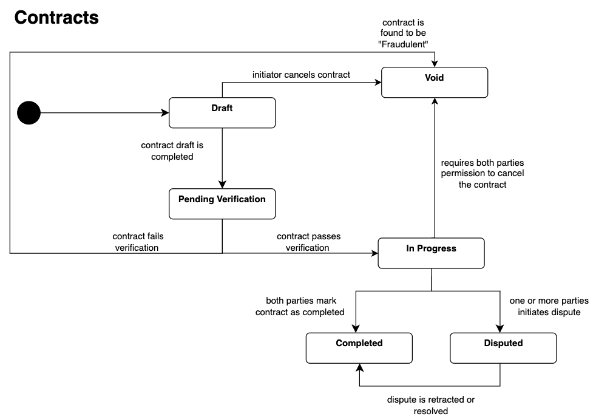
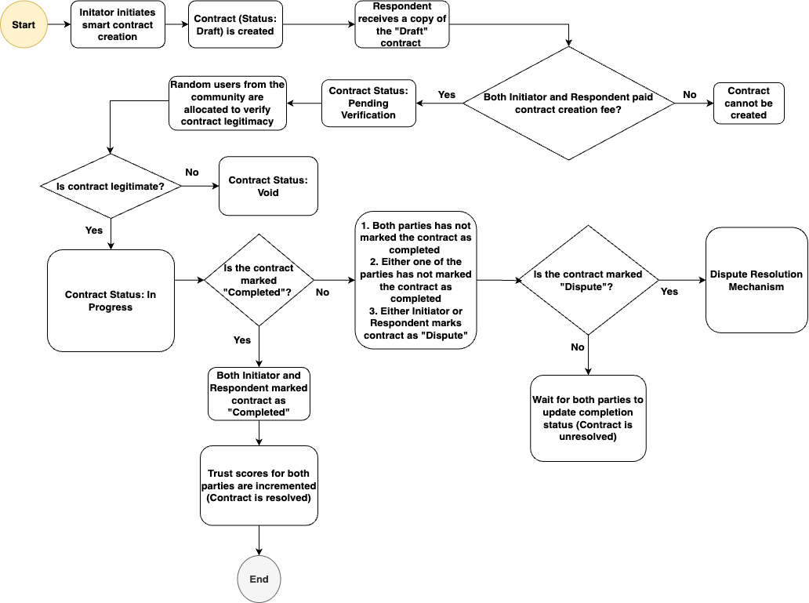
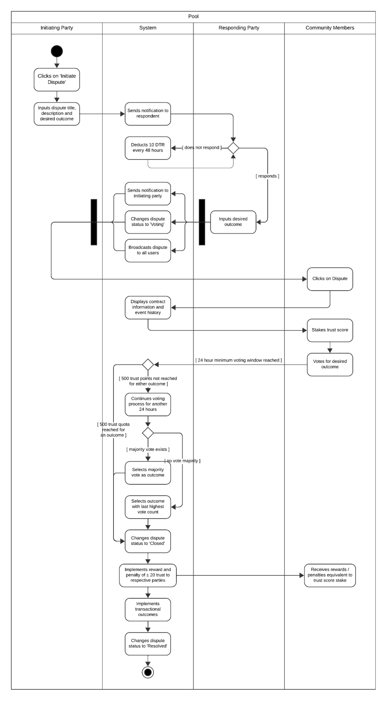
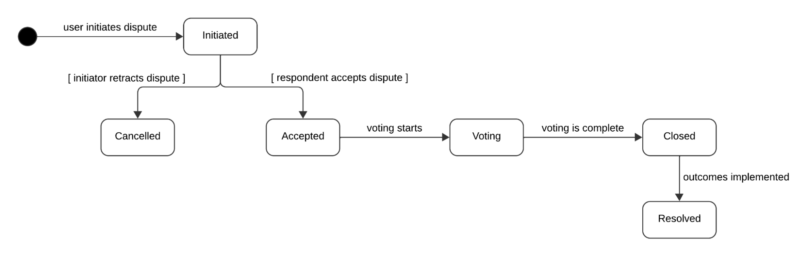
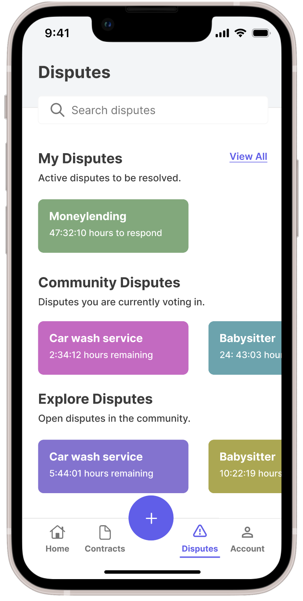
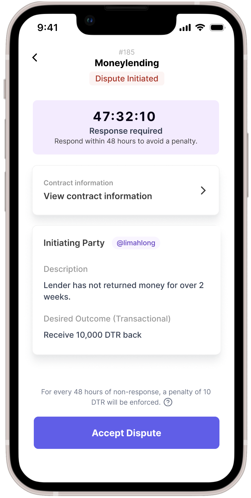
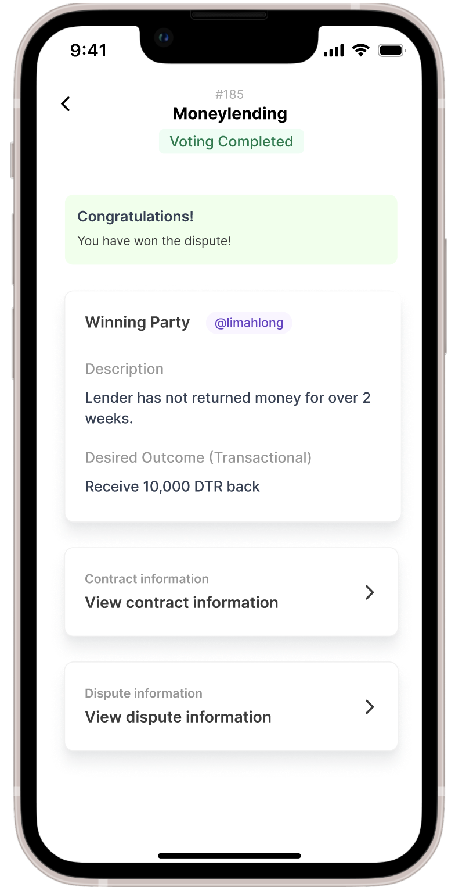
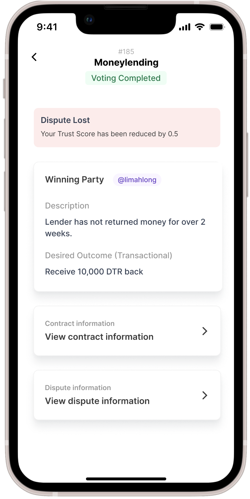

DeTrust: Smart Contracts with Community-led Dispute Resolution
System Design Document
https://github.com/jinghaoong/DeTrust
Contents
Business Case 3
Objectives 3
System Overview 4
Trust score system 4
Token system 4
Smart contract creation and management 5
Dispute resolution mechanism 6
Feature Summary 8
Feature Requirements 10
1. System Mechanics 10
1.1 Trust score mechanism 10
1.2 Token system 12
2. User Management 13
2.1 User Creation 13
2.2 Home Page 15
3. Smart contract creation and management 16
3.1 Contract Creation 18
3.2 Contract Verification 23
3.3 Chat Interface 26
3.4 Event History 28
3.5 Contract Status 29
4. Dispute Resolution 31
4.1 Dispute Overview and Management 32
4.2 Dispute Initiation 34
4.3 Dispute Retraction 37
4.4 Dispute Acceptance 38
4.5 Community voting process 40
4.6 Dispute outcome implementation 43
Economic Incentives 45
Challenges and Limitations 46
Future Developments 47
Annex A: DeTrust Whitepaper
Annex B: User Interaction Mockups
Annex C: Class Diagram
Business Case
In our daily lives, contracts play an integral role in shaping the way we interact, transact, and conduct business. From the simplest handshake agreement to complex legal documents, contracts underpin a wide spectrum of our activities.
In the realm of monetary agreements, contemporary online platforms such as eBay, Etsy, or Carousell have successfully digitised not just the transaction process but its associated legal considerations as well, providing essential infrastructure such for transaction facilitation, buyer protection and dispute resolution. However, there are still certain limitations:
- Limited flexibility: These websites mostly facilitate transactions involving physical products and monetary exchanges, but not peer-to-peer contracts of a more general and flexible nature.
- Centralised dispute resolution: Dispute resolution is often handled by moderators, which means it is centralised to a small group of users who act in the interests of the relevant platforms but not in the general interests of the community.
To address these limitations and open the door to a broader spectrum of contract possibilities, our aim is to create a platform that empowers individuals and entities to engage in more flexible and inclusive agreements. In our present reality, legal services are often prohibitively expensive and only accessible to those with substantial resources. Furthermore, it's a well-known fact that the legal system doesn't always equate to justice, especially in the context of smaller peer-to-peer transactions. Most users are unlikely to resort to formal legal processes for resolving such matters. Our mission is to democratise access to fair and efficient contract execution and dispute resolution, making it accessible to all.
The Blockchain ecosystem and development of Web3 technologies present remarkable opportunities for reimagining the way we manage contracts and trust. Rooted in the concept of decentralised trust, these technologies validate transactions through a distributed network of participants, facilitated by cryptography and consensus systems. Inspired by these principles, we aim to bridge the gap between the limitations of existing systems and the potential for more accessible and equitable peer-to-peer transactions and dispute resolution.
Objectives
Our application thus aims to:
- Empower Personalised Micro-Transactions: Our platform will offer more flexibility, accommodating a more diverse range of contract types and empowering users to create personalised, versatile smart contracts tailored for micro-transactions.
- Enable community-led trust and dispute resolution mechanisms: The trust mechanisms will incentivise trustworthy actions by design, rewarding trustworthy behaviour and penalising untrustworthy behaviour. These mechanisms will be made transparent to users in the form of versioned protocols, allowing the trust processes to evolve and improve over time. Community-led dispute resolution will be available to all users regardless of their financial resources.
System Overview
Trust score system
Central to the idea of decentralised trust is a way of concretising a person’s trustworthiness. For this, rating systems on a scale of 0 to 5 have been well-established as indicators of reliability, and we will follow this measure for a user’s trust score.
Each user will begin with a neutral score of 2.5 out of 5, and will be segmented according to trust score tiers:
Tier | Trust Score | Description |
A | 4.5 - 5.0 | Highly Trusted |
B | 3.0 - 4.49 | Trusted |
C | 2.0 - 2.99 | Neutral |
D | 0 - 1.99 | Untrusted |
Figure 1: Trust Score Tiers
The tiers are structured such that the majority of users will fall in the wider band of the Trusted tier, while the Highly Trusted tier will require significantly more ‘trustworthy’ actions in order to be reached.
Trust tiers have a significant impact, influencing various aspects such as a user’s weekly token income, costs and rewards for contract creation and completion, as well as serving as a multiplier during the dispute resolution process.
In the case where disputes arise, users can choose to stake their trust scores, ensuring that the dispute resolution process remains accessible to all users, irrespective of their financial resources.
Token system
To facilitate the actions of contract creation, we will have a native token (DTR), that serves as in-app currency. DTR can be exchanged with ether at a rate of 0.00001 ETH per DTR, approximately equivalent to 0.0217 SGD.
To use the application, users are required to pay a signup fee of 10 SGD, which provides them with 500 tokens. The actual conversion from SGD results in approximately 460 tokens, with a signup bonus of 40 tokens. Users can use DTR tokens to create contracts, and earn tokens by helping to verify contracts.
The trust score system and token economy encourages users to actively participate in a cycle of contract creation, verification, and resolution. Users earn tokens by verifying contracts, which can then be used to create new contracts, effectively recovering and recycling tokens within the system, and fostering a self-sustaining cycle of trust and economic activity.
Additionally, the deliberate connection to a well-established cryptocurrency, as well as the compulsory sign-up fee, ensures that users have a tangible stake in the ecosystem, discouraging the creation of burner accounts.
Smart contract creation and management
In order to create a contract, both parties will need to pay a contract creation cost, which is essentially paying for a certain number of users to verify the contract. The cost will depend on each party’s tier, and will be a cumulative cost borne by both parties. The verification of the contract is important to guard against fraudulent contracts created for the sake of increasing trust scores.
Each contract will have a 30-day verification period, during which the contract will need to be verified by the stipulated number of users. Only users that are tier C and above are allowed to verify contracts. Each user will be rewarded with 10 DTR for verifying a contract.
Should a contract be found to be fraudulent after being verified (through auditing for example), both parties’ trust scores will be reduced by 2, and DTR tokens will be burned to 500. Additionally, to guard against fraudulent verifications, community users involved in false verifications will have their trust scores reduced by 1, and DTR tokens reduced by 100.
Once a contract is successfully completed, the parties involved will gain rewards in the form of a trust score increment, adjusted to their respective tiers.
The costs, rewards and penalties for contract creation and completion can be summarised as follows:
Tier | Contract Creation Cost (DTR) | Contract Completion Reward (Trust Points) | Contract Verification Reward | Penalty for False Verification |
A | 20 | + 1 |
+ 10 |
Parties: - 2 Trust, DTR burned to 500 Verifiers: - 1 Trust, DTR - 100 |
B | 40 | + 5 |
C | 80 | + 10 |
D | 100 | + 15 |
Figure 2: Contract Creation Costs, Rewards and Penalties
These costs and rewards will be carefully calibrated to ensure a sustainable and equitable ecosystem. Users with lower trust scores will need more users to verify their contracts, resulting in higher contract creation costs. However, they will also earn more significant rewards upon contract completion, as the trust built would be significantly higher than for a user with an already high trust score.
To illustrate this, a new user with a 2.5 trust score (Neutral tier) would need to complete 5 successful contracts to progress to the Trusted tier. From there, they would then need to complete an additional 30 contracts to reach the Highly Trusted tier.
As part of the contract, an event log will be maintained in the form of a chat history, allowing users to communicate in the form of messages, media, and in-chat functions. This event log will be immutable and will serve as evidence in the event of a dispute.
Should the contract not be completed by either party or should any terms be unsatisfactorily delivered on, either party can choose not to mark the contract as completed, and begin negotiations.
Dispute resolution mechanism
In the event of a negotiation that cannot be resolved privately, parties have the option to stake their trust scores and invoke the dispute resolution process. Any party can initiate this, stating their desired outcome.
The other party will now have a period of 24 hours to respond. During this period, both parties will not be able to create new contracts or enter into other dispute resolution processes. If the other party does not respond within the specified window, there will be a penalty of 10 DTR issued for every 48 hours of non-response.
Further negotiations may take place between the parties to avoid going into dispute resolution. Should the parties come to an agreement, the initiating party will be able to retract the dispute. Both parties can then proceed to mark the contract as completed.
Otherwise, the other party can choose to respond with their own desired outcome, thereby accepting the dispute. 50 trust points (equivalent to 0.5 trust score) will be taken as the stake from both the initiating and responding parties. The relatively high stake incentivises parties to only enter into a dispute when attempts at negotiation have been exhausted
The community-led voting process will now be triggered, opening the dispute to the community. Community members will be able to view the contract details and event history, including conversations, pictures, receipts, etc, as well as the two possible outcomes.
To vote, each community member can stake a flexible amount of their trust points, depending on their tier. Tier D users will not be allowed to vote:
Tier | Trust Score Stake Range |
A | 0.05 - 0.1 |
B | 0.05 - 0.08 |
C | 0.05 |
D | NIL |
Fig. 3: Community trust score stake ranges
To ensure fairness of the vote, vote counts will not be displayed, and participants’ identities will remain completely anonymous. Furthermore, the requirement of staking one’s trust score to vote incentivises the community to vote judiciously for the most reasonable outcome.
Taking each vote to be equivalent to 5 trust points, an outcome will automatically win if it attains 100 votes (equivalent to 500 trust points) within 24 hours.
Once the dispute is opened, there will be a minimum 24-hour window before the initial vote count. This allows for faster resolution in the case where an ideal outcome is obvious, while also mitigating the "first-past-the-post" risk where the winning majority just happens to have voted earlier. If the required quota of 500 trust points for an outcome is reached within the initial 24 hours, the vote concludes. If not, the process extends to the full 48-hour window, with resolution based on the majority vote. In cases where no majority is achieved, the resolution will be determined by the last highest vote count when the votes were unequal.
Once voting is completed, the results of the vote will be publicly broadcasted. Should the dispute outcome involve a transaction, the outcome will be automatically implemented. Additionally, the losing party will have 50 trust points deducted. Community users who voted for the prevailing outcome will get an increase in their trust scores equivalent to what they staked, while those who voted otherwise will concomitantly receive a penalty equivalent to what they staked.
Feature Summary
Component | Feature | User Story | Priority |
System Mechanics | Trust score mechanism | As a system administrator, I want to have a metric to represent users’ reliability, in order to facilitate the creation of contracts between them. | High |
Token System | As a user, I want to have a transparent and dynamic trust score, so that I can understand my standing in the community and engage in transactions with clear expectations. | High |
Users | User Creation | As a user, I want to sign up for an account, so that I can start using the system to create contracts. | High |
Home page | As a user, I want to have an overview of the application’s functions, so that I can easily access various services and understand the platform's capabilities. | Low |
Smart Contract Creation and Management | Contract Creation | As a user, I want to be able to create smart contracts that are tailored to my needs, so that I can formalise my agreements with others. | High |
Contract Signing | As a user, I want to be able to sign an involved smart contract, so that I can verify the contract’s particulars. | High |
Contract Verification | As a system administrator, I want to enable community-based contract verification, so that I can ensure that contracts are legitimate. | High |
Chat Interface | As a user, I want to be able to communicate with the other party in a contract, so that we can discuss matters related to the contract. | High |
Event History | As a system administrator, I want to record all contract-related events, so that the event history is transparent and well-documented. | High |
Contract Status Update | As a user, I want to manage and update the status of my contract, so that the relevant outcomes will be executed. | High |
Contract Variation | As a user, I want to create different types of contracts conveniently. | Low |
Dispute Resolution | Dispute overview and management | As a user, I want to get an overview of disputes that I am participating or voting in, and discover open disputes. | Medium |
Dispute Initiation | As a party in a contract, I want to be able to initiate a dispute, so that I can declare my ideal outcome. | High |
Dispute Retraction | As a party in a contract, I want to be able to retract my dispute initiation, so that I can resolve things with the other party informally. | High |
Dispute Acceptance | As a party in a contract who has received a dispute invitation, I want to be able to declare my ideal outcome, so that I kickstart the voting process. | High |
Community-led voting process | As a user, I want the community to vote on my dispute in a timely way, so that I can resolve my negotiation. As a community user, I want to be able to cast my vote anonymously. | High |
Dispute outcome implementation | As a party in a dispute, I want the final outcome of the dispute to be announced and executed, so that my dispute can be resolved and community members can be rewarded or penalised accordingly. | High |
Feature Requirements
1. System Mechanics
1.1 Trust score mechanism
Fig. 4: Display of Trust Score on Profile Page
Item | Description |
User Story | As a user, I want to have a transparent and dynamic trust score, so that I can understand my standing in the community and engage in transactions with clear expectations. |
Description | Establish a tiered trust system to measure and display the trustworthiness of users in the application, allowing for the platform to reward, penalise, and mediate user actions based on their trust score. |
Requirements | Back-end
- Define a Trust Score class/object:
- Trust scores are a number between 0 to 500. Any modifications to the value beyond these parameters will have no effect.
- Trust scores are always displayed as a decimal number between 1-5 on the front end.
- Implement middleware to facilitate various changes to a user’s trust score
- Logic to update trust scores based on user actions, feedback, and dispute resolutions.
- Create middleware/modifier to categorise users into different tiers based on updated trust scores. Ensure that every time a function involving a change in trust score is called, the tier is updated.
- Mechanisms to adjust contract creation, completion costs, and rewards based on trust tiers.
Front-end
- Trust Score Display
- Show trust score of users on their profile page.
- Display the current trust tier (A-D) along with the score.
- Visual indicator (e.g., colour code) differentiating tiers.
- Tooltip or info icon providing details about how the score impacts transactions, token earnings, and dispute resolution.
- Notifications: Set up notifications for users when their trust score changes.
|
Acceptance Criteria | - Users should be able to view their trust score and tier easily on their profile.
- Trust scores should update dynamically based on user actions and feedback received.
|
1.2 Token system
Item | Description |
User Story | As a system administrator, I want to create a form of in-app currency for users to transact with, so that I can build a sustainable economy around smart contracts. |
Description | Build a native token system (DTR) that serves as the primary in-app currency to facilitate contract creation, verification, and other essential platform activities. Integrate the system with Ethereum for exchanges for added tangible value. Enable actions such as minting, additions and deductions, and user-to-user transfers. |
Requirements | Back-end
- Token creation and management:
- Create an ERC20 token on the Ethereum ecosystem named DTR.
- Enable exchange of DTR tokens with Ether at the rate of 0.00001 ETH per DTR.
- Regularly update the DTR-to-Ether conversion rate based on market conditions.
- Token transaction logic:
- Provide functionality for user-to-user DTR transfers.
- Enable token deduction from users when they create contracts or face penalties.
- Credit tokens to users when they verify contracts or receive rewards.
- User Sign Up:
- Implement logic to convert 10 SGD signup fee to approximately 460 DTR tokens.
- Upon sign up, mint 500 DTR tokens for each new signup, consisting of 460 tokens from the SGD conversion and a 40 token bonus.
Front-end - Token Wallet: Display available DTR tokens for each user on their profile/dashboard. Transparently show the conversion rate from SGD to DTR. Provide option to exchange DTR with Ether, showing the current exchange rate.
- Signup Bonus and Payment Interface: Prompt new users to pay the signup fee (in SGD) and display the bonus tokens they will receive.
|
Acceptance Criteria | - Users should receive 500 DTR tokens upon signup after paying the 10 SGD fee.
- The platform should display the correct token balance for every user, updating in real-time with each transaction.
- Users should be able to easily exchange DTR tokens with Ether, and vice-versa, with the exchange rate prominently displayed.
- Contract creation should require token expenditure, and contract verification should provide token rewards.
|
2. User Management
2.1 User Creation
Fig. 5: Sign up and Login UI Mockups
Item | Description |
User Story | As a user, I want to be able to sign up for an account, so that I can start using the system to create contracts. |
Description | This feature focuses on enabling users to register and create an account within the system. User registration is the initial step to gain access to the platform's functionalities, including contract creation and participation. |
Requirements | Back-end
- Define a User data model:
Attribute | Type | Description | isActive | Boolean | Whether the user’s account is currently active or deactivated | accountType | Enum | The account type of the user. Possible values: User, Moderator, Admin | accountNumber | uint256 | Unique account identifier | inDispute | Boolean | Whether or not the user is currently in a dispute | firstName | String | User’s first name | lastName | String | User’s last name | email | String | User’s email address | completedContractCount | uint256 | Number of completed contracts | ownDisputeCount | uint256 | Number of disputes (own) | otherDisputeCount | uint256 | Number of disputes participated in |
- User Registration Logic:
- Implement OIDC protocol to enable SSO with Metamask.
- Validate user input, ensuring data integrity.
- Hash and salt user passwords before storing for security.
- Send a confirmation email for account verification.
Front-end
- Registration Page:
- Allow sign-up via SSO with Metamask
- Build Intuitive sign-up form capturing other details such as user's first name, last name, email address, and password.
- Clear call-to-action (CTA) button for submitting the registration.
- Account Dashboard:
- Upon successful registration, redirect users to their personal dashboard.
- Display essential information including DTR token balance, trust score, and tier level.
- Provide options to view and edit profile information.
|
Acceptance Criteria | - Users should be able to access the registration/sign-up page from the app or platform.
- Users should be able to create an account via SSO with Metamask.
- The registration process should also collect other essential user information, including first name, last name, and email address.
- Upon successful registration, a unique User ID should be assigned to each user.
- The user's initial trust score should be set to 250, and they should receive 500 DTR Tokens.
- The user should be assigned to Tier C by default, indicating their initial trust level.
- Users should be able to view and edit their profile information after registration.
|
2.2 Home Page
Fig. 6: Home Page UI Mockup
Item | Description |
User Story | As a user, I want to have an overview of the application’s functions, so that I can easily access various services and understand the platform's capabilities. |
Description | The homepage is the central hub of the platform, providing users a clear overview of its main features. It offers easy access to essential functions, displays user activities, and allows users to keep a pulse on recent platform developments and updates. |
Requirements | Back-end: - Fetch user-specific details like trust score, DTR balance, and active contracts from the database.
- Implement a search algorithm that can quickly retrieve relevant contracts, users, or past transactions based on user queries.
- Set up an API endpoint to fetch recent updates or news to be displayed on the homepage.
- Ensure all links and buttons have appropriate routing to their respective destinations.
Front-end: - Navigation Bar: Allow users to navigate between ‘Home’, ‘Contracts’, ‘Disputes’, and ‘Account’, as well as provide a large button with a ‘+’ icon to allow easy contract creation.
- Dashboard View: Upon logging in, users should be directed to a dashboard that provides quick stats such as their current trust score, DTR balance, active contracts, and notifications.
- Search Bar: Allow users to quickly search for specific contracts, users, or past transactions.
- User Notifications: Implement a notification system or icon that alerts users of any new messages, contract updates, or system notifications.
|
Acceptance Criteria | - Upon login, users should immediately see their personal dashboard and have a clear view of their trust score, DTR balance, and active contracts.
- Navigation should be intuitive, ensuring users can easily move to different sections of the application.
- The search bar should function seamlessly, providing relevant results based on user queries.
|
3. Smart contract creation and management

Figure 7: Smart Contract State Chart

Figure 8: Smart Contract Lifecycle

Fig. 9: Smarts Contracts Overview UI Mockup
3.1 Contract Creation

Fig. 10: Contract Creation UI Mockups
Item | Description |
User Story | As a user, I want to be able to create smart contracts that are tailored to my needs so that I can formalise my agreements with others. |
Description | - In our common contract, we assume that there is 1 Initiator to 1 respondent and both of them had been pre-selected to complete a contract together. In the case of having multiple Initiators and Respondents, the first listed Initiator or Respondent will be the representative respectively.
- The system should require one party to initiate the smart contract creation, in this case, the party should be the Initiator.
- Smart contracts require both the Initiator and Respondent to pay a fee corresponding to their respective trust score tiers for contract creation (Based on Figure 3). For example, an Initiator with a trust score of tier A will have to pay DTR 20 while Respondents with a trust score of D will have to pay DTR 100 for contract creation and the total contract creation cost will be DTR 120 in total.
- The Initiator and Respondent should permit the contract creation cost as an allowance to the base contract repo address, respectively, before initiating the contract. The fees will be transferred automatically to the base contract repo account during contract creation.
- The contract remains in the Draft status.
- In addition to the Common Contract, there are other fixed-type contract templates(extensions for future work) that provide specific features: Financial contracts, Intellectual Properties contracts, Purchase agreements, and Service contracts.
|
Requirements | Back-end In the code implementation, initiator is referred to as payee, respondent is referred to as payer. Define a Contract Utility class - links to all contract types and is a library to provide common constant data and structures. Attribute | Type | Description | Global Contract State | Enum | Contract states that are general to every contract. DRAFT, SIGNED, INPROGRESS, DISPUTED, COMPLETED, VOIDED. | Contract Type | Enum | COMMON, FUTURE, OPTION, BOND, FUND, STOCK, LEND_BORROW_ETH, SIMPLE_PAYMENT, SMART_VOUCHER, CONTENT_LICENSING, LEASE, PURCHASE, SERVICE.
| Dispute Type | Enum | NONE, V1.
| VerificationState | Enum | PENDING, LEGITIMATE, FRAUDULENT. | Signature | Struct | Signatures from both parties of the contact stored as fixed size byte arrays and total signer amount. | Contract States | Enum | For contracts of different types, they may have different states such as Securities having ISSUED, ACTIVE, REDEEMED states. | Basic Properties | Struct | Basic properties structure that is shared among different types of contracts, including id, contract state, creation time, contract type, dispute type, signature record, verify check, total verifiers needed and the numbers of verifiers based on their decision. It is recorded in the base contract repo for tracking purposes. | Contract Repo Input | Struct | Standardised input structure for contract when storing the contract instance into the base contract repo mapping during contract creation. | Contract Object Types | Enum | For contracts of different types, they may have different object types such as Voucher having Discount or Gift VoucherTypes. | Contract Structures | Struct | For contracts of different types, they may have different structures. |
Define a Base Contract class - Repository that stores all contracts generated.
Attribute | Type | Description | General Repository | Mapping (int -> BasicProperties) | Mapping all basic properties to a repository. | Dispute Repository | Mapping (int -> Dispute) | Mapping all contract ids to their respective dispute instance, if dispute happens. | Wallet Repository | Mapping (address -> address) | Mapping all users’ addresses to their respective DeTrust wallet address. | addToContractRepo() | Int | Store a created contract into the General Repository and return its id back to the caller. | proceedContract() | Function | Proceed a contract to take action after being verified successfully by the Initiator or Respondent. | completeContract() | Function | Complete a contract and allocate the contract completion rewards to the both parties. | voidContract() | Function | Void a contract. | disputeContract() | Function | Record the dispute event of the contract. | isContractReady() | boolean | Check if the contract is activated (INPROGRESS). | isSigned() | boolean | Check if the contract is fully signed. |
Define a Common Contract - A customisable contract which facilitates transactions of a smaller scale. Attribute | Type | Description | Contract Title | String | Title of contract. | Contract ID | Int | Unique ID for contracts. | Contract Type | String | In this case, a Common Contract can be named as a “Common” contract type. | Initiator | address | The party initiating the contract creation. Must be one of the addresses of the parties in the contract. | Respondent | address | The party responding to the contract after it is created. It should automatically be set to the other address in the contract. Each contract should only have 1 initiator and 1 respondent. | Obligation Title | String | A one-liner summary of the obligations each party has to fulfil. | Obligation Description | String | Describes the obligations each party has to fulfil. | Payer | array | True indicating the party is a payer, required to provide payment to the payee. | Payee | array | True indicating the party is a payee, receiving payment from the payer. | Dispute Resolution Protocol | Enum | Indicates which version of Dispute Resolution Mechanism version the contract falls under. | isPayer() | boolean | Returns True if the message sender is one of the payers of this contract. | isPayee() | boolean | Returns True if the message sender is one of the payees of this contract. | resolveObligation() | Function | Resolve any solved obligation (with obligation Id) by any payer. | verifyObligation() | Function | Verify a corresponding obligation is done within expectation by any payee. | checkObligationState() | (boolean, boolean) | Return true respectively if 1.The queried obligation is done by the payer. 2.The queried obligation is verified by the payee. | checkContractState() | (boolean, boolean) | Return true respectively if 1.All obligations are done by the payer. 2.All obligations are verified by the payee. | initiatorWithdraw() | Function | The initiator withdraws ETH from the contract. | endContract() | Function | End and complete the contract, set the contract to be inactive. |
Score rules are kept in the Trust Score Class. Attribute | Type | Description | getContractCost() | Function | Contracts should have varying contract creation costs. This function tells us the contract creation cost for each party based on their trust score tier. | getVerifierAmount() | Function | Contracts should have different numbers of verifiers based on trust score tiers of the involved parties. |
Front-end - At the contract home page, Initiators can click on the “Create a Contract” button to create a contract.
- Check that the user creating the contract has an inDispute status of False.
- A form will pop out showing empty fields for “Contract Title”, “Description”, “Initiator Name”, “Respondent Name” and “Dispute Resolution Protocol” for Step 1 of the Contract Creation (General).
- By clicking “Next” the Initiator navigates to Step 2 of Contract Creation (Obligations). Here, it should show the names of the Initiator and Respondent, their obligation types and their obligation descriptions. Each party may have a list of obligations or no obligations at all.
- By clicking “Next” again, the initiator navigates to Step 3 of Contract Creation (Payment Terms). It should state the roles of each party - whether they should be the payer or payee, the amount to pay, the currency to pay in and any additional terms to follow.
- By clicking “Next” again, the initiator navigates to the last step of Contract Creation (Confirm Contract) which is a summary page of all contract details which were entered previously. This page should also show the total contract creation costs required from both parties.
|
Acceptance Criteria | - An error message “Insufficient fees paid for contract creation” should appear on the Initiator’s account if the Initiator pays below its required fees for contract creation and the contract remains in the Draft status.
- An error message “Insufficient fees paid for contract creation” should appear on the Respondent’s account if the Respondent pays below its required fees for contract creation and the contract remains in the Draft status.
- A success message “Contract XXX has been created successfully” should be output by the system upon the successful creation of the contract where XXX refers to the Contract ID.
|
3.2 Contract Verification

Fig. 11: Contract Verification UI Mockups
Item | Description |
Feature Name | Community-based contract verification |
User Story | As a system administrator, I want to enable community-based contract verification, so that I can ensure that contracts are legitimate. |
Description | - For every contract, the system should randomly allocate users in the community to verify the legitimacy of the contract within a certain time frame (i.e., 30 days, the implemented code demonstrates a range of minimum 1 day and maximum 2 days time limit).
- The Initiator and Respondent’s trust score determines the number of Verifiers required to verify the contract
i. A: 4 verifiers ii. B: 8 verifiers iii. C: 10 verifiers iv. D: 20 verifiers
For example, the Initiator of Tier A trust score and Respondent of Tier C trust score require 4 verifiers and 20 verifiers respectively. In total, they require 24 verifiers. A contract is seen as “Legitimate” when there are more than or equal to half the total number of verifiers required. In this case, we require at least 12 verifiers to vote the contract as “Legitimate”. - The system should allow users to indicate whether the contract is “Legitimate” or “Fraudulent”
- For every successful verification of the contract, the Verifier earns 10 DTR.
- For every failed verification of the contract, there will be a significant penalty on the Verifier. An example of a failed verification is in the event where the majority indicated that the contract is “Fraudulent” but the Verifier indicated the contract as “Legitimate”
- For failed verification, the Verifier’s trust score will be reduced by 1, and DTR tokens will be reduced by 100.
- In the case where there is a tie (an equal number of users vote for “Legitimate” and “Fraudulent”), we will treat the contract as a “Legitimate” one and proceed with processing the contract. If there are any cases of dispute, any parties can choose to begin the dispute resolution process.
- If a transaction is viewed as “Fraudulent”, both the Initiator and Respondent will be penalised by having both their trust scores reduced by 2 and DTR tokens burned to 500.
|
Requirements | Back-end
Edit the Trust Score class to include the following attributes. Attribute | Type | Description | getVerifierAmount() | Function | Returns the number of DTR tokens each user should obtain, which is 10. Before the min time limit is met, at most double of the verifier's amount are qualified to vote. |
Edit the VotingMechanism class to include the following attributes. Attribute | Type | Description | verifyContract() | Function | Verify a contract by voting it as 1:LEGITIMATE 2:FRAUDULENT. Verification reward is allocated on every successful voting. | resolveVerification() | Function | Resolve a contract verification once the verification period is ended, or verification constraints are met. Rewards and penalties will be allocated to both of the contract parties and verifiers. The contract is allowed to proceed to the next step: void / progress allowed. |
Front-end
- Once a draft contract has been created, the system should show the count of the number of days left for contract verification.
- Once the countdown is completed and the number of users allocated to verify the contract is satisfied, the system should display the outcome of the contract as “Fraudulent” or Legitimate”.
- The initiator and respondent can check their list of draft contracts, for the outcome of the contract verification, if the outcome is unavailable, it means that contract verification is not complete and should show the number of days left for contract verification.
|
Acceptance Criteria | - The system should only allow Verifiers to indicate one of the options “Legitimate” or “Fraudulent” and not both options
- After all the users have completed the verification or when the time given to verify the contract is lapsed, the system should update the verification result. If the contract is deemed “Fraudulent”, the status of the contract changes from “Draft” to “Voided”, otherwise it can move on to the “In Progress” status when the involved parties progress it.
|
3.3 Chat Interface
Fig. 12: Chat Interface UI Mockup
Item | Description |
User Story | As a user, I want to be able to communicate with the other party in a contract, so that we can discuss matters related to the contract. |
Description | The platform should offer a robust chat interface allowing users to effectively communicate regarding contract matters. Key features include searchability, chat history, online presence indicators, typing indicators, read receipts, and file-sharing capabilities. |
Requirements | Back-end
- WebSocket Setup: Implement a WebSocket protocol using Socket.io for real-time messaging. Ensure compatibility across different browsers and devices.
- End-to-End Encryption: Ensure that all messages and shared files are encrypted during transit and at rest. Use robust encryption algorithms to guarantee user privacy and security.
- Database Storage: Design a scalable database schema to store chat messages, chat metadata (like read timestamps), and file attachments.
- File Management: Implement a secure method to upload, store, and retrieve files shared within the chat. Include file size limits and type checks to prevent malicious uploads.
Attribute | Type | Description | sendMessage() | Function | Enter the message to be sent. The message will be stored in the respective dialogues mapping. | retrieveMessage() | Function | Get message logs from the mapping in a conversation. Useful to provide evidence for a dispute. |
Front-end
- Chat Interface: Display user names, profile pictures, and message history
- Search and Filter: Include a search bar at the top of the chat interface. Allow users to search for keywords or phrases within the chat.
- User Presence Indicator: Display a green dot next to the user's name or profile picture when they are online, and a gray dot when the user is offline.
- Typing Indicator: Show an animated ellipsis ("...") or a "User is typing..." message at the bottom of the chat when the other user is composing a message.
- Read Receipts: Display a blue checkmark or "Seen" timestamp when a message has been read by the recipient.
- File Sharing: Include an attachment icon or button in the chat interface. Allow users to upload files in specified formats (PDF, JPEG, Word). Ensure users can preview, download, or open files directly from the chat.
|
Acceptance Criteria | - Users should be able to initiate a chat session.
- Messages should be delivered in real-time without noticeable lag.
- Users should be able to easily search through and filter messages within a chat.
- Users should be able to easily upload media.
- The system should display accurate online/offline, typing, and read indicators.
- Users should be able to access their entire chat history.
|
3.4 Event History
Item | Description |
User Story | As a system administrator, I want to record all contract-related events, so that the event history is transparent and well-documented. |
Description | Events of the contracts from their start to end stage should be recorded to provide transparency and openness to all parties. The ability to keep track of all events could help both parties, especially in the case of a dispute. |
Requirements | Back-end - Solidity events to create and emit events every time there is a new chat message, success/error message, change in contract statuses and change in contract completion statuses.
- Events should be stored and arranged by date/time created.
Event emitters are provided for crucial functions.
Front-end - There should be a contract homepage that shows a list of contracts associated with either the Initiator or Respondent who is accessing their list of contracts. The page allows users to input a Contract Title or Contract ID to filter for information associated with a particular contract, users can click into that contract and obtain the event history.
|
Acceptance Criteria | - The system should allow only the parties involved in a contract to search and view all events invoked for their own contracts.
|
3.5 Contract Status
Fig. 13: Contract Page and Status UI Mockup
Item | Description |
User Story | As a user, I want to manage and update the status of my contract, so that the relevant outcomes will be executed. |
Description | - The system should accurately reflect the contract statuses at any point in the contract.
- For contract cancellation, we require both Initiator and Respondent’s permission to cancel the contract for the contract status to be reflected as “Void” when the contract is “In Progress”. Only the Initiator may cancel and mark the contract as “Void” when the contract is still in its “Draft” state.
- At any point in the contract, both the Initiator and Respondent have the right to mark the contract as “Completed” or “Disputed”.
- If both the Initiator and Respondent mark the contract as “Completed”, we deem this as a resolved contract and reward the Initiator and Respondent with an increase in their Trust Scores as set out in Figure 3.
- If either Initiator and Respondent mark the contract as “Disputed”, the contract will be deemed as unresolved and we move on to the dispute resolution process.
- Refer to the state chart provided in Figure 4 for more information on the different contract statuses at different stages of the contract.
|
Requirements | Back-end
Edit the Common Contract to include the following attribute. Attribute | Type | Description | Contract Status | Enum | DRAFT, SIGNED, INPROGRESS, DISPUTED, COMPLETED, VOIDED |
Front-end
1. Adding on to the contract home page mentioned earlier, users should also be able to see the current contract status for all of their contracts on the home page and search for past contract statuses via event history. 2. Using the contract home page, users should also be able to search and cancel any contracts using a “Cancel” button if necessary. 3. Once the Initiator and Respondent change the completion status, the other party should receive a notification in real time. |
Acceptance Criteria | - The system should accurately update the trust scores of both parties.
- The system should accurately display the contract statuses at any point.
|
4. Dispute Resolution

Figure 14: Dispute Resolution Process

Figure 7: State chart for a Dispute
4.1 Dispute Overview and Management

Fig. 15: Dispute Overview Page UI Mockup
Item | Description |
User Story | As a user, I want to get an overview of disputes that I am participating or voting in, and discover open disputes. |
Description | Create a Disputes page that a user can navigate to to get an overview of their disputes |
Requirements | Back-end - Develop the server-side infrastructure to store and retrieve dispute-related data.
- Implement API endpoints to fetch the list of disputes in which the user is actively participating or voting.
Front-end - Design and create the "Disputes" page within the app.
- Ensure the page is accessible from the app's main navigation.
- Display a clear and user-friendly list of disputes that the user is currently involved in, including dispute titles and key information.
- Provide an intuitive interface for users to access additional details about each dispute.
- Allow users to explore and discover open disputes that they can potentially participate in.
|
Acceptance Criteria | - Users can access the "Disputes" page from the app's main navigation.
- The "Disputes" page displays a list of disputes that the user is actively participating in and voting on.
- Each dispute entry in the list includes essential information such as the dispute title, status, and relevant details.
- Users can click on a dispute entry to access more comprehensive information about that specific dispute.
- The "Disputes" page also provides a section where users can explore open disputes.
|
4.2 Dispute Initiation
Fig 16. Dispute Initiation UI Mockups
Item | Description |
User Story | As a party in a contract, I want to be able to initiate or accept a dispute, so that I can declare my ideal outcome. |
Description | In the event of a negotiation that cannot be resolved privately, parties have the option to stake their trust scores and invoke the dispute resolution process. Any party can initiate this, stating their desired outcome. The other party will now have a period of 24 hours to respond. During this period, both parties will not be able to create new contracts or enter into other dispute resolution processes. If the other party does not respond within the specified window, there will be a deduction of 10 DTR for every 48 hours of non-response. |
Requirements | Back-end
- Define a Dispute contract with the following attributes:
Attribute | Type | Description | contractId | address | Address of the contract that the dispute is related to. | initiator | address | The party initiating the dispute. Must be one of the addresses of the parties in the contract. | respondent | address | The party responding to the dispute. Should automatically be set to the other address in the contract. | title | string | Title of dispute. | description | string | Description of dispute. | Status | enum | Types of dispute statuses: - INITIATED
- CANCELLED
- VOTING
- CLOSED
- RESOLVED
| disputeStatus | Status | Dispute status. | GeneralOutcome | Struct | General outcome | TransactionalOutcome | Struct | A transaction outcome defining currency, amount, and payee address | initiatorOutcome | Outcome | Initiator’s desired outcome. | respondentOutcome | Outcome | Respondent’s desired outcome. |
- Create baseline constructor, getter and setter functions
- Relate disputes to contracts via a contractId
- Define this dispute resolution mechanism with a version number of 1.0.0
- Allow users in a contract to initiate a dispute if the following conditions are met:
- Contract status must be ‘In Progress’
- Initiator’s inDispute status should be False
- Only parties in the contract can initiate a dispute
- User has submitted Title, Description, and Desired Outcome
- Once dispute is initiated, implement the following outcomes:
- Set Contract status to ‘Disputed’
- Instantiate a Dispute object based on the DRM protocol version defined in the contract
- Set the Dispute status to ‘INITIATED’
- Emit a ‘disputeInitiated’ event with the following parameters: contractId, disputeId, initiator, respondent
- Trigger a notification to the respondent
- Start timer of 24 hours:
- If respondent accepts dispute within the time period or dispute is retracted, terminate the timer
- If respondent does not respond to dispute within the time period, deduct 10 DTR every 48 hours
Front-end - Allow the user to click on an ‘Initiate Dispute’ button within the Contract main page or chat interface.
- Upon clicking the button, display a modal prompting the user for the following information. Perform input sanitation:
- Title (Max 60 characters)
- Description (Max 200 characters)
- Desired Outcome:
- General outcome, non-enforceable
- Transactional outcome, consisting of a currency, payee, and amount
- Upon submission of the form, display a success message.
- Contract and dispute statuses should be dynamically updated
- Display a notification on the respondent’s application:
- Message: ‘A dispute has been initiated for contract #1234.’
- Action link: ‘View dispute’ - directs user to main contract page
|
Acceptance Criteria | - User should be able to initiate a dispute with another party in an active contract
- The responding party should be notified of the initiated dispute
|
4.3 Dispute Retraction
Item | Description |
User Story | As a party in a contract, I want to be able to retract my dispute initiation, so that I can resolve things with the other party informally. |
Description | After initiating a dispute, the initiator will have the option to retract their dispute. This feature allows the parties to revert to informal negotiations, avoiding potential penalties and keeping the matter private. |
Requirements | Back-end
- Write a function, cancelDispute(), to allow the initiator of a dispute to retract it if the below conditions are met:
- Dispute status must be ‘Initiated’; else throw error with message ‘Dispute status is not initiated’
- The address of the user triggering the request matches the dispute’s initiator’s address; else throw error with message ‘Requestor address not initiator’s address’
- When executed, the function should:
- Change dispute status to ‘CANCELLED’’
- Change contract status to ‘In Progress’
Front-end
- On a Contract’s main page, display an option for the initiator to retract the dispute
- When clicked, display a modal with a confirmation message
- If confirmed, call the cancelDispute() function
- Display a success or error message depending on the response
|
Acceptance Criteria | - The initiator of a dispute should be able to retract their dispute.
|
4.4 Dispute Acceptance

Fig. 17: Dispute Acceptance UI Mockup
Item | Description |
User Story | As a party in a contract who has received a dispute, I want to be able to declare my ideal outcome, so that I kickstart the voting process. |
Description | After a dispute is initiated, the responding party can choose to respond with their own desired outcome, thereby triggering the community-led voting process. |
Requirements | Back-end
- Write an acceptDispute() function to allow the respondent in a dispute to accept a dispute if the following conditions are met:
- The dispute status should be ‘INITIATED’; else throw error with message ‘Dispute status is not initiated’
- The request has to originate from the dispute’s respondent; else throw error with message ‘Requestor address not respondent’s address’
- Respondent can submit a null outcome (meaning no change to status quo)
- When request is triggered:
- Instantiate the respondent’s outcome and update the outcomes mapping in the Dispute instance
- Change the dispute status to ‘ACCEPTED’
- Set both Initiator and Respondent’s inDispute status to True
- Emit a ‘disputeAccepted’ event with the following parameters: contractId, disputeId, initiator, respondent
- Send a notification to the dispute initiator: ‘Dispute for Contract #1234 has been accepted.’
Front-end
- On the Contract main page, display the following to the respondent:
- Input field for outcome
- ‘Accept’ button
- When the respondent submits the form:
- Trigger the acceptDispute function, passing in the respondent’s desired outcome
- If success message is returned, send a notification to the dispute initiator:
- Message: ‘Dispute for Contract #1234 has been accepted.’
- Otherwise, display error message to respondent.
|
Acceptance Criteria | - The respondent in a dispute should be able to accept a dispute.
|
4.5 Community voting process

Fig. 18: Community Voting Process UI Mockup
Item | Description |
User Story | As a party in a dispute, I want the community to vote on my dispute in a timely way, so that I can resolve my negotiation. As a community member, I want to cast my vote anonymously. |
Description | When a dispute is accepted, the community-led voting process will be triggered, opening the dispute to the community. Community members will be able to view the contract details and event history, including conversations, pictures, receipts, etc, as well as the two possible outcomes. |
Requirements | Back-end
- Add the following attributes to the Dispute smart contract:
Attribute | Type | Description | finalOutcome | Outcome | Either the initiator’s or respondent’s desired outcome, whichever wins in the voting process. | VoteSum | struct | A structure that stores the accumulated score, timestamp and the previous score. | initiatorVoteSum | VoteSum | VoteSum for the initiator’s outcome. | respondentVoteSum | VoteSum | VoteSum for the respondent’s outcome. | Vote | struct | A structure that stores the voter’s address and staked trust score amount. | initiatorVotes | Vote[] | Array of votes for the initiator’s outcome. | respondentVotes | Vote[] | Array of votes for the respondent’s outcome. | LossGain | struct | A structure that stores the amounts to increase or decrease the trust score for the winner and loser of the dispute, and their respective voters. | loseGainAmounts | LossGain | LossGain structure stores the values for increasing or decreasing the trust score of the winner and loser of the dispute, and increase for the winning voters. |
- Provide front-end with the appropriate getters to retrieve and display dispute information.
- Set up a listener for the disputeAccepted event. When the event is emitted, trigger the voting process via an openVoting() function:
- Change the dispute status to ‘VOTING’
- Initialise a VoteSum() function with the current block.timestamp and 0 score
- Allow community users to cast their vote and stake their trust score by calling the vote() function, choosing one of the desired outcomes and amount of trust score (TS) to stake.
- Implement a range of allowed trust score stakes depending on the tier of the user:
- Tier A: 5 - 10 Trust points
- Tier B: 5 - 8 Trust points
- Tier C: 5 Trust points
- Ensure that Tier D users are not allowed to vote.
- Ensure that each vote contains information about the voter and the outcome they voted for.
- Write a concludeVoting() function that collates the votes:
- After 24 hours, check if an outcome has accumulated 500 trust points. If yes, set this as the final and winning outcome
- Otherwise, continue allowing voters to submit votes. If an outcome accumulates 500 trust points, set this as the final and winning outcome.
- Otherwise, after another 24 hours, check which outcome has the majority vote (i.e. more than 50%). This will be the winning outcome.
- Otherwise, if there is no majority vote, select the outcome with the last highest vote count when the votes were unequal.
- Implement the necessary methods to interact with the front-end, notifying it when an outcome has been decided.
- Update the Dispute instance:
- Change the Dispute status to ‘CLOSED’
- Emit a disputeClosed event with the following parameters: contractId, finalOutcome, loseGainAmounts
Front-end
- Display dispute information on the home page
- When a user clicks into a dispute, display dispute information including Title, Description, Status, Initiator’s desired outcomes, Respondent’s desired outcomes, Contract information, Time Remaining, Outcome
- Ensure that vote counts are not displayed and users are anonymous.
- Provide a button for the user to vote on the dispute:
- If a user is a tier D user, deactivate the button
- Otherwise, open a modal with the following fields:
- [Number input] Stake: The user’s stake amount. Perform input validation to ensure users can only submit stake amounts that are allowed for their tier.
- [Dropdown] Vote: The user’s voted outcome.
- Upon submission of the form, display a confirmation message.
- Upon confirmation, submit the user’s vote to the back-end.
- When an outcome has been decided, update the following information on the dispute page:
- Status: Closed
- Outcome: Counting
- Hide the ‘Vote’ button
|
Acceptance Criteria | - Community users should be able to view a dispute and vote for an outcome by staking their trust scores
- Users should be able to view a dispute’s live status
|
4.6 Dispute outcome implementation
 
Fig. 19: Dispute Outcome UI Mockups
Item | Description |
User Story | As a party in a dispute, I want the final outcome of the dispute to be announced and executed, so that my dispute can be resolved and community members can be rewarded or penalised accordingly. |
Description | Once voting is completed, the results of the vote will be publicly broadcasted. Should the dispute outcome involve a transaction, the outcome will be automatically implemented. The losing party will have 50 trust points deducted. Community users who voted for the prevailing outcome will get an increase in their trust scores equivalent to what they staked, while those who voted otherwise will concomitantly receive a penalty equivalent to what they staked. |
Requirements | Back-end
- Set up a listener for the disputeClosed event. When emitted:
- Access the loseGainAmounts attribute and implement the respective changes to each user:
- Deduct 50 trust points from the loser of the dispute
- Add trust points equal to the amount staked for community members who voted for the winning outcome
- Deduct trust points equal to the amount staked for community members who voted for the losing outcome
- and deduct the trust points from community members
- Implement the finalOutcome:
- If a transactionOutcome was defined, implement the transactional outcome.
- Once all outcomes have been implemented:
- Change the dispute status to ‘RESOLVED’
- Emit a disputeResolved event with the following parameters: contractId, finalOutcome
- Update the Contract related to the dispute, changing status to ‘COMPLETED’
- Set both Initiator and Respondent’s inDispute status to False
Front-end
- When all outcomes have been implemented, update the following information on the dispute page:
- Status: Resolved
- Outcome: Display final outcome (Both general and transactional)
- Send notifications to users involved in the dispute, displaying a message, number of trust points added or deducted, and outcomes that were implemented:
- Winner: You have won the dispute.
- Loser: You have lost the dispute.
- Winning voter: You have voted for the winning party.
- Losing voter: You have voted for the losing party.
- Update the contract page:
- Status: Completed
- Publicise additional dispute information
|
Acceptance Criteria | - The initiator, respondent, and voters in a dispute should receive the rewards, penalties, and outcomes dictated by the results of the community-led voting process.
- Both Dispute and Contract pages should be updated.
|
Economic Incentives
The economic incentives integrated into Detrust play a fundamental role in its operational framework and user engagement.
Effectiveness of the Trust Score System
The trust score system, with its tiered categorization, is a strategic approach to incentivize user behaviour. However, its success largely depends on the accuracy and fairness of the scoring mechanism. For instance, the impact of this system on new users or those in the lower tiers needs careful consideration. Ensuring that these users have a clear and achievable pathway to improve their scores is crucial to avoid potential discouragement and ensure equitable participation across all tiers.
Token Economy and Its Role in User Engagement
The dApp's token system, utilising DTR as the medium for transaction facilitation, is designed to promote a self-sustaining economic cycle. By requiring users to pay a sign-up fee, which is then converted into tokens, the platform ensures a tangible sense of ownership and responsibility among users. However, the long-term viability of this system hinges on maintaining the value and utility of DTR tokens. The platform must ensure that the token retains its value, both in terms of its exchange rate with Ether and its utility within the platform, to prevent devaluation and ensure ongoing user engagement.
Contract Creation and Verification Incentives
The incentives for contract creation and verification are well-thought-out, with tier-based costs and rewards. While this approach effectively promotes contract integrity and user participation, it is essential to continuously monitor and adjust these incentives to maintain balance. For instance, the higher costs and rewards for lower-tier users might serve as a double-edged sword, potentially deterring participation due to higher initial costs or leading to gaming the system for higher rewards. Regular reviews and adjustments of these incentives are necessary to ensure they serve their intended purpose.
Community-Led Dispute Resolution Mechanism
The stake-based voting system in dispute resolution is innovative, as it directly involves the community and makes each vote consequential. However, this mechanism's success is contingent on the community's active and fair participation. There's a risk of bias or apathy, especially if the community members do not feel adequately informed or connected to the disputes at hand. Regular feedback and potential revisions to this mechanism might be necessary to ensure it remains effective and fair.
Conclusion
By aligning the interests of different participants with the overall health of the platform, the economic incentives built within Detrust promote a sustainable, trustworthy, and active user ecosystem. As Detrust evolves, these economic mechanisms will play a pivotal role in its growth and effectiveness. Continuous evaluation and adjustments will be essential. Ensuring fairness, transparency, and accessibility across all user levels, and maintaining the utility and value of the token economy will be crucial for the long-term success and sustainability of the platform.
Challenges and Limitations
This section outlines the key challenges faced during the design of Detrust. Ranging from technical hurdles to governance issues, these challenges highlight the necessity for ongoing innovation and strategic improvements in shaping the ongoing evolution of Detrust.
Oracle Problem in Transaction Verification
DeTrust relies on its community to act as oracles. Naturally, the 'Oracle Problem' arises, and verifying the authenticity of off-chain activities poses a significant challenge. This issue is magnified by the broad and diverse nature of transactions Detrust handles. The reliability of these oracles depend on the maintenance of engagement and integrity within the community; however, this cannot be guaranteed.
Smart Contract Verification and Authenticity
The development process has also revealed complexities in verifying the legitimacy of smart contracts, especially for non-financial agreements. With the potential for fraudulent contracts and the ambiguity in establishing what counts as a ‘legitimate’ contract, the platform is vulnerable to misuse by bad actors, who may capitalise on the very rules designed to maintain equitability to exploit the system. This predicament highlights the need for a sophisticated framework for contract verification.
Governance and Incentive Structures
Governance mechanisms, particularly the economic incentives designed to promote positive behaviour and deter malpractice, have also presented challenges. The effectiveness of the current reward system may require deeper mathematical validation to ensure alignment with DeTrust’s governance objectives.
Dispute Resolution Processes
In conceptualising the dispute resolution process for Detrust, a central challenge has been the establishment of a fair and viable dispute resolution mechanism. Firstly, the system's effectiveness hinges on active user participation; without it, the dispute resolution process is ineffectual. Next, ensuring fairness and impartiality in the rules and mechanisms of dispute resolution is paramount to maintain user trust. However, as with any rule-based system, potential biases and blind spots may be inherently built in, unfairly skewing the mechanism to favour certain types of users.
Once an outcome is decided upon, the next issue arises with enforcement. While the platform can automatically enforce transactional outcomes, general outcomes are subject to softer enforcement measures, relying more on community consensus and reputation impact. This may raise concerns about the robustness and effectiveness of Detrust's enforcement mechanism. The challenge extends to managing and moderating any lingering disagreements following a decided outcome, necessitating a nuanced approach to escalation and further resolution.
Conclusion
As Detrust evolves, it is clear that the success of the platform will hinge not just on its technological foundation, but also on its adaptability and strategic foresight in the ever-evolving landscape of decentralised applications.
Future Developments
To address the aforementioned challenges, the following developments will be prioritised.
Advancements in Oracle Functionality
In response to the Oracle Problem, future developments will focus on enhancing methods and exploring partnerships to improve the verification of off-chain activities. This initiative aims to bolster transaction confirmation accuracy, fostering trust and reducing disputes.
Framework for Contract Verification
To address contract verification challenges, the next phase will involve the development and implementation of comprehensive guidelines and protocols for the verification of contracts. This approach is intended to reduce the incidence of fraudulent contracts and strengthen trust in contractual agreements on the platform.
Economic Incentive Model Refinement
Acknowledging the governance-related challenges, there will be a focused effort on revising the reward system, underpinned by thorough mathematical analysis. This revision is aimed at optimising the incentive mechanisms to more effectively encourage positive behaviour and prevent fraud.
Enhancements in Dispute Resolution Mechanism
Improvements in the dispute resolution mechanism are slated to include refinements to both the pre-dispute and formal dispute stages. The objective is to make conflict resolution more efficient, accessible, and effective for all parties involved.
In light of the voting-related challenges, future updates will introduce mechanisms for revoting, proposing alternative outcomes, and establishing a weighted voting system for trusted moderators. These changes are designed to ensure a fairer and more accurate community decision-making process.
To safeguard the interests of all stakeholders, particularly vulnerable groups, there will be provisions for initiating additional dispute rounds in justified scenarios. This measure, coupled with rigorous governance controls, aims to offer a more equitable resolution process while mitigating potential manipulative practices.